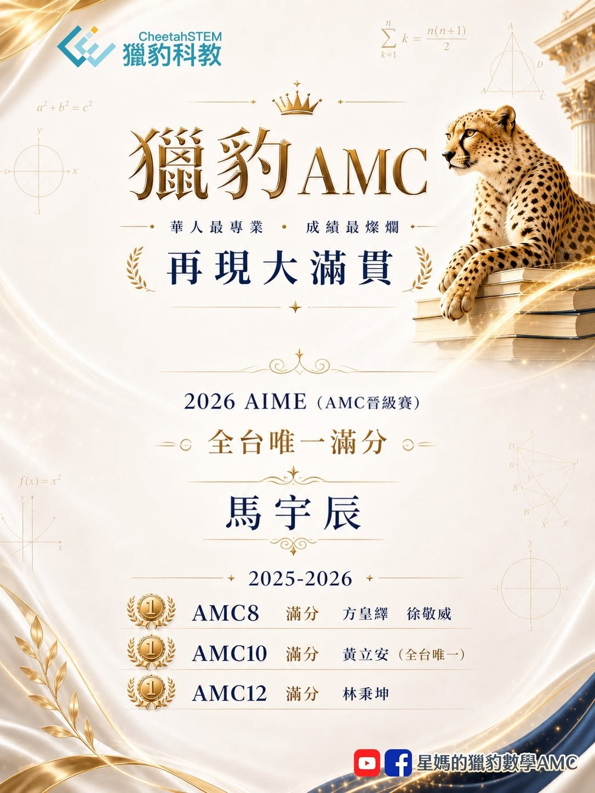

獵豹AMC 華人最專業 成績最燦爛 再現大滿貫
🌹2026 AIME （AMC晉級賽）
全台唯一滿分 馬宇辰
（AMC10滿分、中一中科學班榜首、入選2026台灣IMO國手）
🌹2025-2026
🔹AMC8 滿分 方皇繹(建科數學T分數106.9) 徐敬威
🔹AMC10 滿分 黃立安（全台唯一、中一中科學班榜首）
🔹AMC12 滿分 林秉坤（入選2026台灣APhO國手）
AMC系列是美國最具代表性的競賽，用以選拔IMO代表隊，也是美國頂尖大學STEM科系非常看重的學術活動。
獵豹學子的優異表現，都是長期的積累，持久的努力。
指導過他們的老師，在背後支持的家長也都功不可沒❗️
這些優秀的孩子其中多位長期參與了獵豹網課，在獵豹的訓練下，潛移默化 厚積薄發。（國小數學P系列、GGB、國中數學J系列、高中數學S系列、AMC 競賽課程、FA高階競賽系列、FUC微積分課程）
以馬宇辰同學為例，除了優異的天賦，更難得的是，多年來不間斷的在獵豹網課，他不只是「認真上課」，獵豹老師要求的複習，他都認真執行；派發的作業，持續不輟地練習；每週的思考題，他都認真推敲、努力完成。
選擇獵豹
跟最專業的老師學習
與優秀同儕一起進步‼️
👍馬宇辰:
（參與獵豹網課：FA系列, 高中數學S, 國中數學J, AMC衝刺課, 微積分FUC）
👍方皇繹：
（參與獵豹網課：FA系列, 高中數學S, AMC10, AIME, 高中輕競賽FS01, 微積分FUC）
👍黃立安：
(參與獵豹網課：科學班備考FA00,國中資優數學J系列, AMC10/12衝刺課)
👍林秉坤:
(參與獵豹網課：高中數學S ,FS高中輕競賽, AMC10衝刺, AIME衝刺班)
👍徐敬威:
(參與獵豹網課：小學P系列, AMC8考前衝刺課, AMC10/12衝考前刺課)
馬宇辰同學分享在獵豹學習的心得:
我第一次接觸獵豹是在小六的時候，對數學有興趣所以參加了JA，之後也參加了S系列跟FUC（喔~順帶一提，課程結束後才發現電神陳羿安學姊是我同學XD，她超安靜）。獵豹的課最有趣的地方是，無論哪一位老師上課，都會下課前出TSE思考題，印象很深刻，TSE是think、share、enjoy（當然也可以是talk、sleep、eat（誤））而一題TSE永遠不會只有一個解法，而每次課後最期待的事，就是看我能用多少解法解同一題，同時也在磨練我的解題思維。我認為我今日數學能有如此，(雖暫時還沒有太大的成就)，有一大部份都是獵豹的功勞！
P.S. 字有一點醜但不能怪我，因為我人在飯店（？）
P.S. 相信我，今年我數學一定會有所成就！
（小皮敬上）
